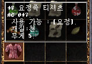

|
2002年10月25日
韓國測試伺服器 - 萬聖節活動
來源：韓國官方網站公告、Lineage Playforum (2)、Jude1004.com (2)
英文翻譯：Lineage Compendium
韓國測試伺服器昨天開始了萬聖節活動，在各村落中都會出現NPC南瓜燈(Jack-0-Lantern)，它會說周圍出現了不少邪惡的南瓜燈入侵者，它們的攻擊會附加中毒效果，假如我們可以將它們殺死便可以得到獎勵。
但是，那些南燈是隱型的，我們只有兩種方法可以令它們現身：第一，將價值100金幣的萬聖節糖果(Candy for Jack)放在地上，引他們拾起及現身。第二，就是要裝備價值1000金幣的南瓜面具去看穿它們的隱身。
在殺死南瓜燈後便可得到南瓜種子，南瓜燈有強有弱，但在戰鬥前我們是不能從外表得知的。
我們只要收集一定數量的南瓜種子便可以換取獎品，10個種子可以換銅南瓜，25個換銀南瓜及50個換金南瓜。另外大的南瓜種子可以換取10個普通的南瓜種子。
在打開那些南瓜後便可以得到道具，可能會是藥水、空白卷軸、變身卷軸或復活卷軸。而金南瓜則更會有龍鱗、龍鱗甲、精靈餅乾、防卷武卷，以及本活動最重要的道具：

精靈T恤，防禦0，重量5，妖精專用，安定值6！
韓國測試伺服器 - 南瓜怪登場
|
南瓜怪 |
南瓜 |
 南瓜種子 南瓜種子 |
大南瓜種子 |
昨天韓國測試伺服器有大量檔案更新，主要是加入萬聖節的活動。而香港會否在萬聖節舉辦活動呢？本網估計香港伺服器當天將會開放黑騎士、思巴克、雪怪、牛人、巨人或死神變身，或是開放幻想系統裝備及幻想防武卷，當然亦有可能和韓國一樣舉行南瓜活動。
另外根據Nue's Lineage的資料，部分圖示與正確名稱如下：
|
Elven T-shirt |
精靈T恤，妖精專用，防0，安定值6！ |
 |
Mysterious Crystal Ball |
神秘水晶球 |
|
Crystal Staff |
水晶魔法杖 |
|
Mysterious Staff |
神秘魔法杖 |
新試鍊道具官方中文名稱
以下名稱來自香港1.92更新檔案，部分名稱好像不太準確：
| 原先名稱 |
建議名稱 |
原先名稱 |
建議名稱 |
敏捷頭盔
體力頭盔
破舊的交易文書
亞南的信
阿特的證書
搜索狀
傑羅的介紹狀
詹姆的介紹狀
黑騎士的誓約
都達瑪拉妖魔魔法師
那魯加妖魔魔法師
甘地妖魔魔法師
阿吐巴妖魔魔法師
被詛咒的魔法師
魔法書
紅色披風
骷髏頭
食屍鬼的指甲
食屍鬼的牙齒
龍龜的皮
騎士頭巾
紅色騎士頭巾
瑞奇 (Ricky)
阿特 (Oth)
傑羅 (Zero)
詹姆 (Jem)
黑騎士搜索隊
遺忘之島船票
依斯巴
阿希理斯
被遺忘的金屬盔甲
被遺忘的皮盔甲
被遺忘的長袍
被遺忘的鱗盔甲
召喚先人的戒指
被遺忘的巨劍 |
精靈敏捷頭盔
精靈體力頭盔
古老的交易文件
黑騎士的誓約書
都達瑪拉妖魔魔法書
那魯加妖魔魔法書
甘地妖魔魔法書
阿吐巴妖魔魔法書
被詛咒的魔法書
魔法能量之書
龍龜殼
紅騎士頭巾
被遺忘的鱗甲
召喚控制戒指
|
被遺忘的劍
被遺忘的保佑巾 (Bowgun)
破舊的風之頭盔
風之頭盔
兔子的肝
???? (Oblivion)
海音行船票
古代的金屬盔甲
古代的皮甲
古代的長袍
古代的鱗甲
古代的劍
古代巨劍
古代的保佑巾 (Bowgun)
發現者 (Detector)
奇克
樂金
迪倫
古代卷軸
受封印的
魔法書 (精準目標)
魔法書 (鮮豔的)
生命的祕密
歐吉古樂
塔比
風壓
樂金比
(精準目標)
(鮮豔的)
幻想之劍
幻想盔甲
幻想弓箭
幻想武器魔法卷軸
幻想盔甲魔法卷軸
依魯吉那 |
被遺忘的弩槍
古老的風之頭盔
遺忘
海音船票
古代皮盔甲
古代弩槍
魔法書（鮮艷靈氣）
風之杖
（鮮艷靈氣）
幻想之弓 |
Lineage II東京遊戲展2002示範動畫
Lineage II官方網站放上了在東京遊戲展2002中的示範動畫，大家可以在該網的動畫區下載。
本網評語：場境製作非常精美，且可以自行選擇合適的視角，但角色攻擊節奏太慢，加上沿用舊有的聲效似乎不太協調，當有多角色在同一畫面下時畫格急劇下降，似乎對電腦的要求真的很高。 |